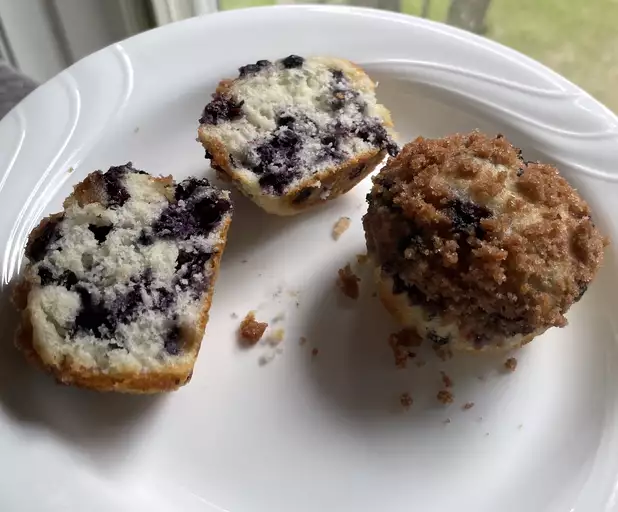

Blueberry Muffins to DIE For

Description
These muffins are extra large and yummy with the sugary-cinnamon crumb topping. I usually double the recipe and fill the muffin cups just to the top edge for a wonderful, extra-generously-sized, deli-style muffin. Add extra blueberries too, if you want!
Ingredients
Muffins:
- 1 1⁄2 cups all-purpose flour
- 3⁄4 cup white sugar
- 2 teaspoons baking powder
- 1⁄2 teaspoon salt
- 1⁄3 cup vegetable oil
- 1 egg
- 1⁄3 cup milk, or more as needed
- 1 cup fresh blueberries
Crumb Topping:
- 1⁄2 cup white sugar
- 1⁄3 cup all-purpose flour
- 1⁄4 cup butter, cubed
- 1 1⁄2 teaspoons ground cinnamon
Directions
- Preheat the oven to 400 degrees F (200 degrees C). Grease 8 muffin cups or line with muffin liners.
- Whisk flour, sugar, baking powder, and salt together in a large bowl.
- Pour oil into a small liquid measuring cup. Add egg and enough milk to reach the 1-cup mark. Stir until combined. Pour into flour mixture and mix just until batter is combined. Fold in blueberries. Set batter aside.
- Combine sugar, flour, butter, and cinnamon for crumb topping in a small bowl. Mix with a fork until crumbly.
- Spoon batter into the prepared muffin cups, filling right to the top. Sprinkle with crumb topping.
- Bake in the preheated oven until a toothpick inserted in the center of a muffin comes out clean, 20 to 25 minutes.